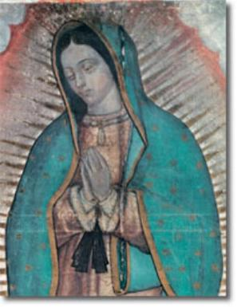
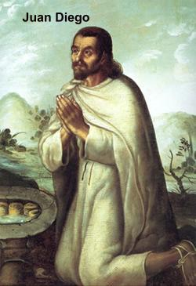
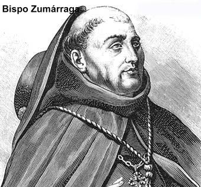
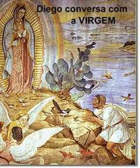

DERRAMANDO A PROTEÇÃO DIVINA
CUMPRINDO A MISSÃO DIVINA
Juan
Diego desceu rapidamente a colina e seguiu direto para a casa do senhor Bispo,
Frei Juan de Zumárraga, que se 
Ele permaneceu ali no portão, esperando até que o sol estivesse mais alto. E assim, bateu novamente. Depois de algum tempo, outro ajudante do palácio veio e abriu os portões. Como este outro ajudante nada lhe perguntou e também nada lhe disse, e, seguiu andando sem olhar para ele, Juan foi o acompanhando e insistindo que precisava de conversar com o senhor Bispo. Mas ninguém aparentemente lhe dava a menor atenção. Então ele gritou dizendo que precisava falar urgente com o senhor Bispo. Apareceram diversas pessoas, olharam o índio, mas não disseram nada. Ele ficou esperando alguma notícia, ali no pé da escada. Depois de um longo tempo alguém lhe acenou, para que subisse e entrasse, que o senhor Bispo ia recebê-lo.
Diante do Bispo, Juan Diego se ajoelhou e logo entrou diretamente no assunto, sem qualquer esquecimento e sem nenhum receio, revelando tudo o que viu, ouviu e admirou, assim como transmitiu também, a mensagem que a linda Senhora mandou que ele transmitisse ao senhor Bispo. O religioso que estava sentado numa grande cadeira, começou a sorrir cheio de dúvida, embora não o interrompesse. Mas a seguir falou:
- “Filho meu, venha outro dia, e então vou te ouvir com calma e examinar tudo o que realmente te traz aqui, e quais são os teus desejos e a tua vontade”. E assim despediu o índio.
SEGUNDO ENCONTRO COM NOSSA SENHORA
Juan Diego saiu triste, o Bispo tinha confundido o desejo e a vontade da Senhora, dizendo como se fosse coisa dele. O Bispo não acreditou nele. Cheio de tristeza precisava dizer a Senhora o que tinha acontecido. Foi direto a colina. Lá no alto a Senhora já o esperava e com o olhar acompanhava os seus passos tristonhos enquanto ele se aproximava. Ajoelhou e se inclinou até o chão e disse:

Juan sentiu dificuldade em olhar a Senhora, mas ergueu-se e se aproximou um pouco mais Dela, dizendo:
- “Senhora minha, Menininha minha, eu Te suplico que encarregues alguma pessoa entre os nobres, entre aqueles mais estimados, alguém que seja conhecido, respeitado e honrado. Assim ele será acreditado quando levar o Teu amável desejo, a Tua amável palavra”.
Juan abaixou a cabeça e humildemente continuou falando: “Na verdade, eu sou só um índio, um homem do campo, um saco de carga. Eu mesmo preciso ser guiado e carregado às costas! Aquele lugar aonde me enviou não é lugar para mim, nem para ir e nem para estar. Virgenzinha minha, Filha minha a menor, Senhora, por favor, dispensa-me! Sei que vou afligir o Teu rosto, entristecer o Teu coração. E assim, só poderei cair em teu desagrado, em teu desgosto, Senhora minha”!
A Senhora escutou-o maternalmente, inclusive levando-o a imaginar que Ela estava aceitando as suas palavras. Mas na realidade NOSSA SENHORA reagiu e falou:
- “Escuta, Juantzin, o menor de meus filhos, tenha a certeza em teu coração que não são poucos os Meus servidores e mensageiros, aqueles que Eu poderia encarregar de levar o Meu desejo, a Minha palavra, para que façam a Minha Vontade. Mas é absolutamente necessário que sejas tu, pessoalmente, que vás e rogues. Será por meio de ti que se fará a Minha Vontade e tudo aquilo que desejo fazer para vós neste lugar. Por isso te peço com insistência, Filho Meu o menor, envio-te outra vez ao Bispo e vá cheio de energia. Vai ver o Bispo amanhã e faze-lhe ouvir e saber a Minha Vontade: que aqui se faça a Minha Casa, porque é aqui que desejo mostrar Minha compaixão e Minha clemência. Diga-lhe claramente que sou Eu, pessoalmente, a Sempre VIRGEM SANTA MARIA, a MÃE DE DEUS, quem te envia”.
Juan Diego ao escutar tais palavras, ganhou nova e vigorosa energia e não mais hesitou em voltar a se encontrar com o Bispo, para lhe dizer toda a mensagem revelando a plena Vontade da VIRGEM MARIA. Então falou:
- “Senhora minha, Rainha minha, que eu não angustie com sofrimento o Teu rosto e o Teu Coração. Com todo gosto irei novamente, levarei o Teu desejo, a Tua palavra ao Governador dos sacerdotes. De nenhum modo deixarei de fazer tudo direitinho. Nem considero ruim o caminho. Irei e falarei. Mas talvez não seja ouvido... E se for ouvido, talvez não seja acreditado... Amanhã, a tarde, ao por do sol, virei devolver à Tua palavra, ao Teu rosto e ao Teu Coração, aquilo que me responder o Governador Bispo”.
Hesitou um pouco, olhou para o caminho e novamente para a Senhora que o olhava e completou:
- “Então agora eu me despeço respeitosamente de Ti, Filha minha a menor, Jovenzinha, Senhora minha! Descansa um pouquinho”!
ANIMADO A CONTINUAR NA MISSÃO
Juan Diego seguiu apressado o caminho que levava a sua aldeia, embora já fosse noite. Sentia feliz e com uma disposição invencível. E cheio de energia, chegou a casa, descansou um pouco e no dia seguinte, logo cedo novamente se pôs a caminho. Tão tarde chegou e tão cedo saiu que na sua aldeia ninguém ficou sabendo dos acontecimentos.
Era domingo, ele chegou cedo a “Tlatelolco” e se juntou a multidão de índios que vinham escutar a doutrina e rezar, apresentar-se a lista de chamada e participar da Santa Missa e dos ensinamentos do sacerdote. Pelo meio da manhã havia terminado a cerimônia e os ensinamentos, e o povo se dispersou. Ele logo tomou o caminho do palácio do senhor Bispo, e outra vez, foi muito difícil entrar. Teve que rogar, insistir, até que depois de muita espera e cansaço, conseguiu ser recebido.
Quando
encontrou o senhor Bispo sentado em sua cadeira grande, Juan Diego caiu aos seus
pés, suplicou, chorou, e 
O senhor Bispo com a fisionomia séria, revelando certa perplexidade pelo fato inusitado, levantou-o e colocou-o numa cadeira e ficou olhando longamente para ele, enquanto Diego humildemente com a cabeça baixa permanecia chorando. Intrigado e cheio de dúvidas interrogou-o sobre a maneira de como ele viu a Senhora e de que forma Ela se apresentava? Juan respondeu todas as perguntas sem dificuldades. O senhor Bispo, ainda muito sério, pois estava repleto de dúvidas, todavia interiormente se alegrava por aquela possibilidade encantadora, mas não se sentia em condições de simplesmente aceitar como verdadeira aquela narrativa do índio, e por isso falou:
- “A tua palavra não é suficiente para que seja atendido o que pedes. É necessário que haja algum sinal, algo que comprove ser verdadeiramente a Rainha do Céu Quem te enviou. Só assim acreditarei. Afinal também encontramos na Sagrada Escritura, que DEUS enviou muitos sinais para mostrar e revelar a Sua Vontade”.
Diante daquelas palavras, Juan Diego parou de chorar, olhou para o senhor Bispo e disse:
- “Senhor Governador, pensa e escolhe qual sinal deseja, o que o senhor quiser, porque vou pedir a Rainha do Céu que me enviou aqui”.
O senhor Bispo vendo que Diego aceitou a sua exigência com tanta segurança, sem vacilar, resolveu despedi-lo imediatamente, sem acrescentar mais nada.
Mas o senhor Bispo ainda estava muito desconfiado, imaginando que tudo aquilo era encenação do índio, para ganhar a confiança dele. Por isso, assim que Diego saiu, chamou três de seus funcionários e mandou que seguissem o índio. Eles foram, correram de um lado para o outro, mas não o encontraram, o perderam de vista, e voltaram enraivecidos, por não terem podido cumprir a ordem recebida. Por isso decidiram, se o índio voltasse ao palácio episcopal, por qualquer motivo, iam dar-lhe um “gelo” (deixá-lo esperando indefinidamente)
TERCEIRO ENCONTRO COM NOSSA SENHORA
Enquanto no palácio episcopal os funcionários tentavam explicar o “porque” de ter perdido o índio de vista, Juan Diego, no alto da “Colina Tepeyac” desfrutava da companhia maravilhosa da SANTÍSSIMA VIRGEM, e Lhe contou a exigência do senhor Bispo.
- “Está bem, filhinho meu, voltarás aqui amanhã e levarás ao Bispo um sinal, já que ele pediu. Com esse sinal ele vai acreditar, não duvidará mais de ti e nem de Mim. E saiba filhinho meu, que Eu te recompensarei bem todo o teu cuidado, o teu trabalho e a tua paciência, que Me dedicou. Bem, agora vai para sua casa, amanhã te espero aqui novamente”.
DOENÇA DO TIO
No dia seguinte, segunda-feira, quando Juan Diego devia logo cedo, se encontrar com a VIRGEM para levar o sinal de Sua Presença solicitada pelo senhor Bispo, ele não foi. Porque tendo chegado à casa de madrugada, encontrou seu pessoal inquieto e angustiado, o tio Juan Bernardino, pegou uma doença repentina e estava muito grave. Ele era irmão de sua mãe e considerado o mais importante componente da família, por sua inteligência e lucidez, que ajudava a manter uma preciosa harmonia com todos os membros e mantinha presente os ensinamentos das gerações passadas e o caminho para a “Terra Celestial”.
Então, Diego se enveredou por um longo atalho, para trazer de outro povoado um bom médico, que era um verdadeiro sábio de muita confiança. Mas apesar de todos os cuidados, o tio piorava. O médico chegou a confirmar que era uma doença mortal. Ao lado do tio, viu que ele tremia. Tapou-o cuidadosamente com um cobertor e percebeu que ele queria lhe dizer alguma coisa. Aproximou o ouvido dos lábios do tio e escutou que ele queria um Padre, para se confessar.
Juan Diego mesmo acabrunhado pela tristeza, com o possível falecimento do tio, não esperou mais nada, com passadas ligeiras foi em direção a “Tlatelolco”, à Casa dos Padres, a fim de pedir que um fosse atender o seu tio.
E caminhando ligeiro e pensativo, seguia o mesmo caminho dos dias anteriores, e por isso, aproximou-se da “Colina Tepeyac”. Teve um estremecimento: “A Senhora”! Pensou confuso e preocupado. Se continuar por este caminho seguramente Ela vai me parar para que eu leve o sinal ao senhor dos Sacerdotes. Eu quero levá-lo com muito prazer, mas primeiro preciso socorrer o meu tio. Por isso, Diego deu uma volta pelo outro lado da Colina, imaginando que não seria visto pela Rainha do Céu. Atordoado pela doença do tio se esqueceu de que Ela, a nossa querida Mãe, olha diligentemente por todos os seus filhos em todas as partes do mundo.
QUARTO ENCONTRO COM NOSSA SENHORA
A VIRGEM
MÃE vendo-o aflito seguindo por outro caminho foi ao seu encontro e perguntou: 
- “Que acontece ao menor dos meus filhos? Aonde vai tão perturbado”?
Confuso e envergonhado, Juan se inclinou e se recompondo fez uma saudação:
- “Minha Jovenzinha, Filha minha a menor, Menina minha, espero que estejas bem! Estás contente”?
A Senhora ao invés de lhe responder, interpelou-o suavemente, para que ele dissesse o que tinha acontecido. Ele então não resistindo, falou:
- “Sei que vou afligir o Teu rosto e o Teu Coração. Mas devo dizer a Senhora que está muito grave um pobre servidor Teu, meu tio. Uma enfermidade se apoderou dele e seguramente o levará a morte. Por isso estou indo apressado a “Tlatelolco” chamar um dos que são a imagem de NOSSO SENHOR, um sacerdote, para confessá-lo e prepará-lo, como ele me pediu. Meu tio agoniza! Por essa razão vou fazer o que ele me pediu, e logo a seguir, voltarei aqui para servir a Senhora, levando ao senhor Bispo, o que comprova o Teu desejo e a Tua palavra, Senhora, Jovenzinha minha”.
A VIRGEM MARIA compassiva ouvia as suas explicações, com muita piedade. Ele depois de permanecer um instante em silêncio, meio acabrunhado, acrescentou quase chorando:
- “Peço-Te que me perdoes, tenha um pouco de paciência comigo, pois não quis Te enganar, Filha minha a menor! É urgente o que estou fazendo. Amanhã, sem falta, virei Te procurar”!
- “Escuta, filho Meu o menor, entendi bem a tua razão e a tua aflição. Mas, que o teu rosto e nem o teu coração se perturbe mais. Não temas esta doença e nenhuma outra, e não tenhas aflição”. E lhe abriu ternamente os braços. “Eu que sou a tua Mãe, não estou aqui? Não estás embaixo da Minha sombra e da Minha autoridade? Não estás bem resguardado? Não sou Eu a garantia da tua vida, da tua saúde, da tua paz, da tua alegria? Não estás nas dobras do Meu manto, nos Meus braços? Juantzin! Juan Diogotzin! Tens necessidade de alguma outra coisa, de outro alguém? Filho, que nada te aflija ou te perturbe. Não se preocupe com a enfermidade do teu tio, porque ele não morrerá desta enfermidade. Não morrerá agora. Coloque no teu coração: teu tio já está bom”!
Juan Diego ficou tão consolado, que uma imensa felicidade envolveu o seu coração e a sua alma. Então, ansioso em atender a Senhora, suplicou que o mandasse imediatamente ao senhor Governador dos Padres com o sinal de comprovação para que o senhor Bispo acreditasse e providenciasse atender o desejo Dela. NOSSA SENHORA falou: